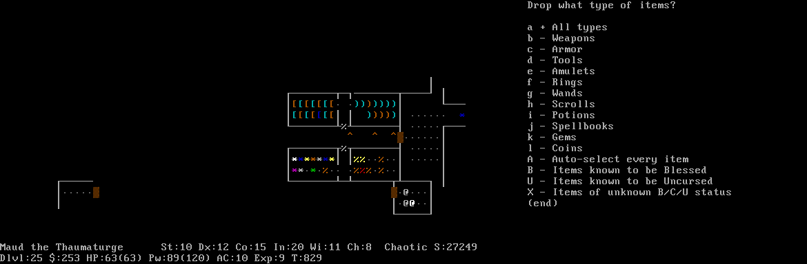

computer science, math, programming and other stuff
a blog by Christopher Swenson
2022-05-07
There are a few points I've learned about designing JSON APIs over the years, and I've had a hard time finding articles that pinned down this advice. So, here are a couple of design tips for JSON.
Don't give semantic meaning to object keys
The keys themselves in a JSON object should not give signifiant information.
What do I mean? Here is a JSON object whose keys have semantic meaning from an endpoint that is meant to give a list of movements and actions for a robot to take.
{
"left": "5m",
"forward": "10m",
"grab": "left"
}
At a glance, this seems nice and compact. However, ask yourself: are these actions ordered? Do I need to move left, then forward, then grab? What if I want to repeat an action, like left, forward, left?
While it is technically valid for JSON to contain such repetitions and ordering, such as in:
{
"left": "5m",
"forward": "10m",
"left": "6m",
"grab": "left"
}
To parse this correctly will be tricky and non-standard in every language.
Most parsers will treat this object as identical to:
{
"forward": "10m",
"grab": "left",
"left": "6m"
}
(although it is not clear which of the left actions will "win").
In addition, it can be more difficult to parse this object even if there is no need to preserve repetitions or ordering. In many languages, you might be forced to deserialize the object into a generic map or dict, which can lead to more error-prone code.
Instead of assigning semantic meaning to the keys, it is better to use an array with all of the objects being of the same type. This way you can enforce ordering, can have duplicates, and make it easier to parse.
Also, what if you wanted to have two arguments to an action, like specifying which arm to grab with and how much pressure? Wit the above format's compactness, it might be difficult to extend in a backwards-compatible way.
🚫 NO
{
"left": "5m",
"forward": "10m",
"left": "6m",
"grab": "left"
}
✅ YES.
{
"actions": [
{ "action": "left", "argument": "5m" },
{ "action": "forward", "argument": "10m" },
{ "action": "left", "argument": "6m" },
{ "action": "grab", "argument": "left" }
]
}
It may be more verbose and larger, but it is more extensible, easier to parse, and can preserve order without relying on tricky JSON parsing.
Your top-level response should always be an object
You may be tempted to make the top-level response for a list operation be an array, but it is critical that it always be an object.
This is because, in the future, you may want to return additional information about the list itself: paging information, the kinds of things in the list, dates, etc.
It is always safer to add additional keys to an object than to fundamentally change an endpoint from an array to an object.
🚫 NO
[
{ "a": "b"},
{ "a": "c"}
]
✅ YES.
{
"values": [
{ "a": "b"},
{ "a": "c"}
]
}
2022-01-25
In 2008, I wrote and published a book called Modern Cryptanalysis, a technical book
on cryptography and code breaking.
It's been about 14 years since Modern Cryptanalysis was published.
It's had a good run, but it's been out of print for a while now.
As such, I'm releasing it for free!
I've made some very small changes to clean up known errata and to reformat it for US Letter paper, but otherwise I've left it essentially as the 2008 version.
Enjoy! Download here: Modern Cryptanalysis v1.1.
2021-12-10
For the purposes of this article, I am speaking of the "tech" industry in general (for companies of all sizes), especially for programmers, as that is where I have experience.
Hiring people fairly is impossible, and therefore, meritocracy is a myth.
(Here, meritocracy means the idea that you can identify and reward the "best" people.)
Why?
There is one simple reason for that.
(I am a mathematician, so bear with me here.)
First, the hiring process is binary.
At the end of the process, you either hire someone or you don't,
assigning them a value of 0 or 1.
This means you have assigned a 1-dimensional number to each candidate.
(Which makes sense, because mathematically you can only unambiguously, or fairly, you might say, compare 1-dimensional numbers.)
This means that, no matter the set of people that you have, you fundamentally have to compare them.
That is, you need to boil them down to a single number — 0 or 1 in the hiring sense, or to a more general real number if you want more granularity, like a number 1 to 5 or -1 to 1.
(Mathematically, this is similar to defining a total order or
metric space.)
The problem is: people are not a single number.
The fundamental theorem of people is: you cannot boil a person down to a single number.
Say that person A is a more reliable Python programmer than person B, but person B is more creative.
And Person C is in between A and B in programming ability, but learns quickly.
And Person D is a weak programmer, but can understand and destroy any technical problem.
And Person E is a slow coder, but can be trusted to document and test their code thoroughly.
And Person F tackles problems in an entirely different way.
Who is "better"?
The answer: no one can be objectively better than the others, in general.
Ultimately, who you hire should depend heavily on many other questions that are hard to quantify, and don't even entirely depend on the candidate: who is on your team now? Which people will work best with them, and with people you might hire in the future? Which person's strengths and weaknesses are complement the team as a whole?
None of these questions are truly objective or depend solely on the intrinsic attributes of the candidate.
The job of the hiring manager is to boil down all of these parts of the people into a single number: 0 (don't hire) or 1 (hire).
It is impossible to do this fairly and objectively for everyone.
That this is unfair and subjective is obvious to anyone who has been through the hiring gauntlet at most tech companies.
They use a variety of methods to try to measure candidates, such as takeaway programming problems, pair programming exercises, whiteboard coding, brain teasers and puzzles, favoring certain degrees, requiring years of experience, or looking at open source work.
Some people do well with one method or another, and some don't.
You can't fairly say that because someone is worse at a whiteboard under high pressure that they will make a worse employee, or that someone being excellent at a take-home problem will work well with the existing team.
The person at the whiteboard might simply be having an off day, they might not deal well being under the microscope of a high-pressure whiteboard interview, or even the person conducting the interview may not be able to guide them through the interview fairly.
Likewise, acing a take-home exam demonstrates some ability to solve problems in a certain scenario, but does little to show how well they communicate or work with others.
It all comes down to: all hiring processes are doomed to be unfair.
You should accept that, and come to terms with it.
Then, you should examine your hiring processes, make them as fair as possible,
and know exactly how they are unfair.
Only by understanding your own strengths and weaknesses as a company, hiring manager, or interviewer will you even come close to being able to hire people and set them up for success.
2018-02-06
Just a quick follow-up to a previous post on 32-bit assembly language programming for OS X.
I've had a fair amount of interest in this post, surprisingly, so I thought I would update it for the 64-bit Intel world we live in now.
The biggest change is that the calling convention now uses registers instead of the stack by
default, and we
use the r* 64-bit registers instead of the e* 32-bit registers.
A huge source of annoyance for me is the way we pass pointers to data.
Now, in macOS, it is necessary for local data pointers to relative to the instruction pointer,
which is most easily accomplished using rel your_data_here and using lea instead of a
bare mov.
This can also be accomplished using the DEFAULT REL directive, which says that
all addresses in lea should be rel.
BITS 64
DEFAULT REL ; RIP-relative addressing by default
;
; Basic OS X calls to glibc
;
; compile with:
; nasm -g -f macho64 malloc64.asm
; gcc -o a.out malloc64.o
;
; glibc stuff
extern _puts, _printf, _malloc, _free
; static data
section .data
hello_world_str db "Hello world!", 10, 0
int_str db "Address %llx", 10, 0
; code
section .text
global _main
_main:
; save registers and align stack
push rbp
push r12
push rbx
lea rdi, [hello_world_str]
call _puts
mov rdi, 16
call _malloc
; check if the malloc failed
test rax, rax
jz fail_exit
mov rbx, rax
xor rax, rax
mov rsi, rbx
lea rdi, [int_str]
call _printf
; print "A\nB\n..."
mov [rbx], word 0xD41 ; 'A\n'
mov r12, 10
_loop:
mov rdi, rbx
call _puts
inc qword [rbx]
dec r12
jnz _loop
; free the malloc'd memory
mov rdi, rbx
call _free
xor rax, rax
pop rbx
pop r12
pop rbp
ret
fail_exit:
mov rax, 1
pop rbx
pop r12
pop rbp
ret
The output should look something like this:
Hello world!
Address 100200000
A
B
C
D
E
F
G
H
I
J
2018-01-14
This weekend, I wrote a quick email application called Friendship API.
It solves a problem that I have: I am just terrible at staying in touch with my friends via email.
This is a shame: email is really a great tool for keeping in touch.
Friendship API works like this: it uses ContextIO to look at people you interact with, filter out what looks like spam and business email, and send you a weekly email reminding you that you owe a person an email.
There's no account or password to manage: the weekly emails contain action links to ignore certain people in the future, generate another reminder, and cancel your subscription.
Hence, I use the term "email application".
There's also very little storage we have to do: basically, we keep track of email addresses of people who sign up, their ContextIO tokens, what recommendations we send out, and a list of email addresses that the people want to ignore.
If they cancel their subscription, we revoke our ContextIO tokens.
Why Python? The Stack
It's all built on Python 2.7. Why Python? Because there are a lot of great libraries and utilities that I can leverage to help me write the app quickly (over the weekend).
Sadly, some of the stack was still not ready for Python 3+.
- ContextIO: to do the extremely hard work of connecting to people's email accounts. Plus, they have a great Python API.
- Mailgun: to send emails, which has a dead-simple RESTful API.
- Flask: a straightforward way to build simple web APIs.
- Celery: a wonderful Python-based task queue system.
- SQLAlchemy: a robust way to deal with SQL databases.
- Heroku: an easy way to host the email application.
- Amazon S3: an easy way to host a simple static website.
- ThemeForest: a cheap way to get an website theme that looks good.
- Diet Dr Pepper: my choice of caffeine to keep me typing throughout the weekend. :)
Massive thanks to the hard work of those who wrote the stack I stand on.
The Process
How does one go about writing an app like this after getting the idea and setting
aside a spare weekend? Well, here's the process I followed at least:
- Outline in your head (or write down) the features that you need to launch with.
- Talk it over with someone.
- Sign up for all of the accounts you might need and don't already have (in this case, the ContextIO developer account).
- Write a simple program to prove that the hard things are possible: in this case, that is reasonable to use ContextIO to get the data we need, and then to generate sensible recommendations.
- Use Celery to make the program calls asynchronous.
- Write a simple Flask app that calls into that program.
- Use RequestBin to capture the ContextIO callback, so you know how to capture the authentication token when someone signs in.
- Write the Flask endpoints to generate a ContextIO signup session, and the Flask endpoint to capture the ContextIO callback information, and process based on that.
- Hook up the recommendation function to send out an email.
- Write a barebones web page that calls out to your web site.
- Setup hosting for everything.
- Have someone who isn't you test out the flow.
- Write the rest of the functions for your bare minimum features.
- Theme the static site.
That was fun!
Future Improvements
There are a few more things that would be nice to do for the application.
- Better recommendations. There's still a lot of work that could be done to improve recommendations:
- Using past recommendations to influence future recommendations.
- Adjusting the metric used to pick who to recommend.
- More advanced filters to differentiate business, spam, and friendship conversations.
- Adjusting the frequency of recommendations. It's currently hardcoded to one week per email.
- Better-looking recommendation emails.
- Suggest topics of conversation. We could pick topics randomly, or we could try to analyze past emails, perhaps.
- Handle people with multiple email addresses. Currently, the application keys off of email
addresses alone, so it can suggest someone whom you might be corresponding with regularly
if you are doing so with a different email address.
2018-01-14
I'm an armchair fan of NetHack and other roguelikes, though I don't play them too much.
I've always wondered why there wasn't, say, a NetHack screensaver that would just play through the game, since it seemed to be ripe for screensavering.
I'd found some pieces of tools that might do the job around the Internet: TTY "recordings" of NetHack ascensions (essentially, replaying through the terminal sequences while they are playing), pyte (a Python terminal emulator), and images2gif (a mostly working animated GIF maker).
It's almost there, so I wrote the missing piece that takes the screen buffer (as a matrix of character codes) and converts it to an image using an old DOS bitmap font, and then all of the glue code to make it all work together.
I sped up the results by 5× or so, and then run the whole thing through ImageMagick in the end to shrink the animated GIF.
I open sourced the whole thing as ttyrec2gif. It produces nice GIFs like:

There's one last piece: how to actually turn this into a screen saver.
In OS X, it's a matter of writing a little Quartz Composer program to randomly pick GIFs from a directory and play them as movies. This has hard-coded paths in it, because I haven't figured out how to make OS X screen saver configuration parameters, so I'll just post a screen shot of what the program looks like:
(Having Quartz pick a random GIF and then reload and pick another one after 5 minutes is a fun challenge. The best solution I came up with involved using a wave generator that, when rounded, would trigger an event only when it reached its apex, and this triggered a sampler to resample and pick a new random GIF. Kind of a Rube Goldberg way of doing it, but it was fun.)
Anyway, at the very least, there are some cool GIFs out there to look at now.
I'm considering doing a big run and converting a more runs into GIFs, but it's very time-consuming (it takes many hours to convert a game to an animated GIF for now).
2015-04-26
When browsing through some stack traces doing Go development, I noticed that Go had done something rather
clever in their codebase: on x86-64 processors, they used
the AES instruction set
to build a hash function.
The more I've thought about it, the more this is potentially quite brilliant.
AES, the block cipher, compounds multiple rounds of mixing data together, shuffling bits around, and
transforming it.
For the past several years, all Intel and AMD processors have supported doing an AES round in
a single instruction.
Hashing and random number generation use the same sort of principles as AES is based on: basically,
shuffle bits around and transform them.
AES gets cryptographic strength by doing this many times in a row (usually 10+).
However, if we are building a hash table or generating random numbers for simulations (or other non-cryptographic uses), then we don't need the full cryptographic strength of AES.
But, we can still leverage the AES instruction set to build some fast random number generators and hashes.
For starters, I've gone ahead and written an AES-based random number generator that performs a single round of AES as its core, and iterates to produce more random numbers.
In practice, it is about twice as fast as the Mersenne Twister.
I think that the biggest reason that most people haven't done this is that it's a relatively new feature, and
doing CPUID detection to make sure that the AES instruction set is available at runtime is kind of annoying.
At the very least, this library has those pieces already written.
Some caveats:
- The quality of random numbers produced is not as high as the mersenne twister (they don't quite pass the dieharder test suite).
They're not terrible either; they're just not as good.
- This only works on relatively modern x86-64 processors.
To detect support, you can use the included
cpuid.h to call intel_has_feature(INTEL_FEATURE_AES)
to see if the CPUID instruction indicates support for the AES instruction set.
- It's very probably that more performance or better numbers could be created.
I used a fairly straightforward seed and random number generator.
I've also been experimenting with an AES-based hash function that is extremely similar to this.
There is an equivalent test set to the Diehard tests for hash functions, called SMHasher.
Unfortunately, my preliminary results are not encouraging: AES instructions are possibly slower
than the Murmur3 algorithm when tuned to pass the SMHasher tests.
With only 1 or 2 rounds of encryption used, my AES hash function does not seem to pass the
SMHasher suite, though it does after 3 or 4 rounds.
Unfortunately, these extra rounds make the performance not quite as competitive.
I'm still tinkering with the AES-based hash function though to try to make it faster
or hash better. I'll report back with my findings.
2014-11-30
Part 1 is here
Modular arithmetic
When I first started tinkering with crypto, one thing I was confused about was modular arithmetic.
It's applications to crypto are everywhere: AES is based in part on finite field
arithmetic, for example.
However, modular arithmetic acts a little strange if you aren't used to it.
I've seen this topic confuse just about everyone at some point, so I thought
I would explore modular arithmetic a little, and show a fun application of it for generating shortened URLs (or short codes).
To start, you can think of modular arithmetic simply as: every time you do a numerical operation, like adding, subtracting, or multiplying two integers,
you also take the modulus with respect to some other number.
Like, we know that $1 + 10 = 11$, but if we are doing arithmetic modulo
$6$, then $1 + 10 \equiv 5$ (because $11 \div 6 = 1$ with remainder $5$).
We use $\equiv$ to mean "equals modulo something" or "is congruent modulo something".
Addition, subtraction, and multiplication are easy: just add, subtract, or multiply the numbers like normal, then divide by the modulus and take the remainder.
Some more examples modulo $6$: $2 + 5 \equiv 1$, $2 \cdot 5 \equiv 4$, $2 - 5 \equiv -3 \equiv 3$.
There in the last example we saw that $-3 \equiv 3$ modulo $6$.
In math, we often will use only the positive remainder (so, $3$), but
in some programming languages, negative remainders are allowed in some
cases (so you might see $-3$).
For the most part, that doesn't matter: all of the arithmetic will
still work as expected.
Division, or, multiplicative inverses
Addition has its opposite, subtraction, that works by default.
Multiplication also works, but its opposite, division, isn't guaranteed to work.
For example, we might want to know, can we divide by 2?
Division is really multiplying by the inverse, so what is the inverse of 2?
Looking, again, modulo 6:
$$2 \cdot 1 \equiv 2$$
$$2 \cdot 2 \equiv 4$$
$$2 \cdot 3 \equiv 0$$
$$2 \cdot 4 \equiv 2$$
$$2 \cdot 5 \equiv 4$$
So, $2$ has no inverse modulo $6$, because nothing, when multiplied by $2$, is equal to $1$.
And if we try to divide by $2$ modulo $6$, it fails: $4 \div 2$ is still $2$, but what is $3 \div 2$? Normally, we'd just say $3/2$ or $1.5$, but we don't
have fractions or decimal points here: all we have is the integers $0--5$, and
none of them, when multiplied by $2$, is equal to $3$.
But, sometimes we have multiplicative inverses.
Modulo $6$, $5$ has a multiplicative inverse: it's also $5$.
This means that dividing by $5$ is the same as multiplying by it.
$$2 \cdot 5 \equiv 10$$
$$2 \div 5 \equiv 2 \cdot 5 \equiv 10$$
Cyclic groups
Okay, so, division sometimes works. When?
Well, simply put, division is guaranteed to work, in that we will be able to find
a multiplicative inverse, if we are working modulo a prime or a prime power, e.g., modulo $7$ or $7^2 = 49$.
When we have such a case, we call the set of numbers modulo the prime (or prime
power) a finite field.
I won't go into the nitty gritty details on the terminology, but essentially,
a field is what we get when division works.
Sometimes, we call the numbers (modulo our modulus), except $0$, the
multiplicative group, or the cyclic group.
Why cyclic?
Well, when we are working modulo, say, a prime $p$, then we can
generate at least part of the group with another prime, $g < p$,
by multiplying $g$ by itself a bunch of times.
For example, modulo $11$, with $g = 2$:
$$g \equiv 2$$
$$g^2 \equiv 2 \cdot 2 \equiv 4$$
$$g^3 \equiv 4 \cdot 2 \equiv 8$$
$$g^4 \equiv 8 \cdot 2 \equiv 16 \equiv 5$$
$$g^5 \equiv 5 \cdot 2 \equiv 10$$
$$g^6 \equiv 10 \cdot 2 \equiv 20 \equiv 9$$
$$g^7 \equiv 9 \cdot 2 \equiv 18 \equiv 7$$
$$g^8 \equiv 7 \cdot 2 \equiv 14 \equiv 3$$
$$g^9 \equiv 3 \cdot 2 \equiv 6$$
$$g^{10} \equiv 6 \cdot 2 \equiv 12 \equiv 1$$
$$g^{11} \equiv 1 \cdot 2 \equiv 2$$
and we've looped back around.
Hence the term cyclic.
Modulo $11$, we generated the whole multiplicative group (of size $10$).
However, we won't necessarily always generate the entire group: sometimes
we get a subgroup instead.
For example, look at $g = 2, p = 7$:
$$g \equiv 2$$
$$g^2 \equiv 2 \cdot 2 \equiv 4$$
$$g^3 \equiv 4 \cdot 2 \equiv 8 \equiv 1$$
$$g^4 \equiv 1 \equiv 2 \equiv 2$$
and we've looped after only $3$ elements.
In general, for a multiplicative group defined by $q$ of size $q - 1$, then
any element will generate a subgroup that divides $q - 1$.
So, for $7 - 1 = 6 = 2 \cdot 3$, so an element could generate
subgroups of size $1$, $2$, $3$, or $6$.
Crypto
So, where's the crypto?
Well, first off, we might have noticed that the operation $g^x$ seems
to have this "scrambling" effect: the numbers that you get out
are kind of random.
In fact, they're very random for large moduli $q$.
In general, it's believed to be quite hard, given $g$, $q$, and
$g^x$ (modulo $q$) to figure out $x$.
This is called the discrete logarithm problem,
and the fact that it is believed to be difficult means
that people have used its difficulty as the foundation
behind crypto, such as, especially:
How large is "large"?
Large $q$ generally means hundreds or thousands of bits in size.
We'll come back to this bit in a bit, but the important part to note here is that, in general, inverting the exponentiation, or, taking the discrete logarithm,
is hard.
Also, finite field arithmetic, in particular, division in a finite field,
plays a critical part in AES.
Short codes
There's another useful thing we can use modular arithmetic and discrete logarithms for: a URL shortening scheme, like the URLs you see
starting with g.co, t.co, bit.ly, etc.
There are a few ways you might try to implement such a scheme.
First, we'll assume that you are just assigning each URL a number,
and then you'll use something like Base32 to convert the number (in binary) to a string.
Then how do you assign the number?
- Just pick a random number and store it in a database, tied to the full URL.
- Hash the full URL, and use part of the hash as the number.
- Use a 1-up counter and tie it to the full URL.
- Use a 1-up counter, but try to scramble it, for some definition of scramble.
Option 1 is the simplest, and requires basically no math: just generate a random number and stick it in the database.
If there is a collision, try again.
The downside is that, for very short codes, such as for a 5-character Base32 code, the numbers will all be $< 2^{25}$, and will be very likely to collide because of the birthday paradox.
Lots of collisions means you have to try a bunch of times to insert into the
database successfully, and that means more round trips, more chances for weird
race conditions, and more chances for bugs.
Option 2, hashing the full URL, has similar downsides for short hashes: collisions.
This case is even worse though, because you can't change the hash of the URL,
so any collisions are fatal, and mean you can't use that full URL.
So that option is not great.
Option 3, using a 1-up counter in the database, is really easy:
just use a built-in 1-up counter, or assign a bunch of numbers to
individual servers to use, and have them request new batches of numbers
occasionally.
However, this leads to undesirable URLs, like
http://short.url/AAAAC.
It allows users to guess what their URLs might be, and to start poking
around at other short URLs.
Option 4 is a compromise: we want the simplicity of the 1-up counter,
but we don't want users to be able to easily and meaningfully guess the short
URLs.
We just need a scrambling function.
Scrambling a 1-up sequence
But what to choose?
Well, again, we have some options.
Some thought might lead you to think: well, we could just add a constant to the number, or multiply by a constant.
However, this will be pretty obvious to users: they'd notice that consecutive
short URLs would always differ by constant amounts.
Another line of thought: could we use the number in a random number generator
(say, as the seed), and just turn the crank and use the next number in the
sequence?
Yes, that's a great idea, as long as we're careful.
Specifically, we have to be careful about collisions.
Two common random number generators that might fit the bill are
linear-feedback shift registers and
linear congruential generators.
But, we might have a problem: we might need to "unscramble" the numbers,
to tell if they might be in the database.
We might just store the scrambled versions next to the 1-up counter, but
that would require extra storage, and would probably require us to either
write complicated SQL or do an UPDATE, and another database round-trip, to
set the scrambled number as well.
I don't like either of those options.
So, how hard is it to unscramble those random number generators?
For linear-feedback shift registers, this is trying to count how many steps it took to get to the given output number, which is kind of difficult to do.
But, the same is true of linear congruential generators.
Let's take a closer look at the linear congruential generator.
It works by, given an number $X_i$, generating the next number by:
$$X_ {i+1} = A \cdot X_i + C$$
If we assume $C = 0$ and $X_ 0 = 1$, we can compute $X_i = A^i$: this is exactly the same thing as exponentiation, which
is how we found cyclic groups.
So, to "scramble", all we need to do is exponentiate in our cyclic group.
Oh, but wait, this sounds like bad news: we know that inverting exponentiation is the
discrete logarithm, which is hard in general.
The keywords there are "in general".
Can we make pick cyclic groups where it is easy?
Yes, we can.
Easy discrete logarithms
If we are working in a cyclic group modulo $p$, a prime, and if
$p - 1$ is the product of a bunch of small primes or prime powers, then
computing discrete logarithms is easy.
To compute discrete logarithms in that case, we can use the
Pohlig–Hellman algorithm.
The Pohlig–Hellman algorithm works by taking advantage of
short cycles in the cyclic group: essentially, we can piece together the
"full" discrete logarithm by computing a bunch of "small" discrete logarithms,
and using the Chinese remainder theorem
to stitch them back together.
Each of these "small" discrete logarithms are in subgroups defined by
the factors of $p - 1$: so a bunch of small factors of $p - 1$ means
a bunch of small discrete logarithms to do.
If the factors are all very small, then we can just precompute
all factors in the small subgroups.
Putting it all together
Since we want roughly five-character codes, we need to find a large 25-bit
prime with which to make our cyclic group.
Specifically, we want a prime $p$ such that $p - 1$ is all tiny factors.
To make the math easier, it would be nice if $p - 1$ has no repeated
factors (that is, no prime powers).
In Sage (a Python-based mathematics environment),
we can find such a prime with this code:
smoothest = 2^30 # just something large
for p in primes(2^24, 2^25):
smoothness = 0
for f, e in (p - 1).factor():
if e != 1:
smoothness = 2^30
break
smoothness += f
if smoothness < smoothest:
smooth = p
smoothest = smoothness
print smooth, smooth - 1, (smooth - 1).factor()
If we run this snippet, we find the best prime is $17160991$.
We can confirm that
$17160991 - 1 = 17160990 = 2 \cdot 3 \cdot 5 \cdot 7 \cdot 11 \cdot 17 \cdot 19 \cdot 23$.
This means that we can compute logarithms modulo $17160991$ by pre-computing
and storing just $87$ numbers (the sum of the factors of $p - 1$)
using Pohlig–Hellman.
We also need to pick a base $g$, that is, the number we are exponentiating
in our cyclic group.
We basically need a number that generates the entire multiplicative group.
We can use Sage again to find such a number:
for q in primes(3, 1000):
if GF(modulus)(q).multiplicative_order() == modulus - 1:
print q
break
In this case, we find that $61$ is the smallest prime that generates
the full multiplicative group, so it will be our base.
So, our procedure so far to scramble an integer $x$ looks like:
$$61^x\ (\text{mod}\ 17160991)$$
However, there is one tiny problem here: for $x = 0$, we get $1$, and for
$x = 1$, we get $61$, and for $x = 2$, we get $3721$.
These values stick out a bit (they're all small and easily recognized).
To hide them, we can just add some small number to $x$, like 30, giving us
$$61^{x + 30}\ (\text{mod}\ 17160991)$$
So, for $x = 0$, we have $4244504$ and $x = 1$ gives us $1499879$.
If we want to invert a short code, we'll need to unscramble a number $y$ to find the unscrambled number, that is, to find $x$ in
$$y \equiv 61^{x+30}\ (\text{mod}\ 17160991)$$
In the first of the two examples above, we would be trying to solve:
$$4244504 \equiv 61^{x+30}\ (\text{mod}\ 17160991)$$
Using the Pohlig–Hellman algorithm, we can easily compute (with a
few modular exponentiations) the discrete logarithm of $4244504$ is $30$, which means that $x = 0$.
Some code
I've released code for the above computations, including the
Pohlig–Hellman algorithm implementation, in Python on
GitHub, licensed under MIT.
2014-11-10
Certain words in programming I've seen people mangle in various ways, and
many times, I realized that I don't actually know the correct way to pronounce them.
So, I've constructed a list of what I consider to be the correct pronounciations
of various words.
I've tried to use the original authors of as the source, when possible, or other authoritative sources.
In alphabetical order:
- Akka: ahh kahh, https://www.youtube.com/watch?v=GBvtE61Wrto
- Clique: click, https://www.youtube.com/watch?v=txaGsawljjA
- GIF: jif, sorry, http://www.olsenhome.com/gif/
- GNU: guh-new, http://upload.wikimedia.org/wikipedia/commons/2/24/En-gnu.ogg
- Godel: gurr-dle, http://upload.wikimedia.org/wikipedia/commons/f/fd/Kurt_g%C3%B6del.ogg
- Knuth: kuh-nooth, http://cs.stanford.edu/~uno/faq.html
- LaTeX: Leslie Lamport says there is no official pronunciation. Knuth pronounces it lah-tech, http://www.webofstories.com/play/donald.knuth/69;jsessionid=57A6533A825A17DE1474F30F5B254ADD
- Linux: Lih-nucks, https://www.youtube.com/watch?v=uK0xXFZtJ8Q
- MySQL: my-ess-que-ell, https://www.youtube.com/watch?v=nalzRhtn-vw
- NumPy: num-pie, https://www.youtube.com/watch?v=vrPRwUOt-7k
- OS X: oh-ess-Ten, https://www.youtube.com/watch?v=WcZqJHH3Gkc
- PyPI: pie pee eye, http://www.quora.com/How-do-Pythonistas-pronounce-PyPy-and-PyPI
- Qt: cute, https://www.youtube.com/watch?v=2hE-Oo4ltJg
- Scala: scah-lah, rhymes with challah, https://www.youtube.com/watch?v=ecekSCX3B4Q
- SQL: ess-que-ell (since Sequel is the predecessor), https://www.youtube.com/watch?v=BvmMGHtqY6Q
- TeX: tech. https://www.youtube.com/watch?v=C3vILM2cNuo
- Trie: tree, http://www.webcitation.org/5pqUULy24
- von Neumann: von noi-man https://www.youtube.com/watch?v=VTS9O0CoVng
2014-11-06
Cryptography and cryptanalysis are topics that fascinate many people, but it's a tricky area to get into.
For instance, knowing the difference between a hash function and a cryptographically strong hash function is critical, but extremely easy to mix up due to confusing terminology.
In general, there's heavy jargon that takes serious studying to get a grasp on.
Cryptography is also almost entirely a self-taught discipline: even today, there are few college and graduate courses on cryptography, and most of those only cover the basics. (Indeed, this is why I wrote my book on cryptanalysis: I wanted to teach a class on the topic, and there was no suitable text, so I wrote my own.)
This means that it is reasonable, even necessary, to learn a great deal of crypto on your own.
With that in mind, I'm going list a few resources, recommendations, and maybe even explain a little bit myself to help get you started.
Some resources to get you started
- lvh has a video from PyCon 2013 called Crypto 101.
I'm not the biggest fan of this video, as it goes through too much material in too short an amount of time, but it does give you a quick look at many different areas of cryptography.
Since it does cover so much, don't worry if not everything clicks.
Instead, I'd pick something that interests you, like hash functions or AES, and dive further into that one topic.
If you try to tackle too many subjects at once, it might be overwhelming.
- Once you've figured out some areas you actually like, you can start digging in in that particular field.
- There are some great books on cryptography that you'll probably want to read eventually, so I'll go ahead and list some of them here:
- Modern Cryptanlysis by Christopher Swenson. Obviously, I'm a bit biased here, but I wrote some decent introduction sections to many areas of cryptography and cryptanalysis with lots of examples in Python, and there are far worse places to start. I focus primarily on block ciphers (like AES) and public key cryptography (like RSA).
- Applied Cryptography by Bruce Schneier. Extremely dated, but still has some useful stuff. A lot of block and stream cipher stuff.
- Practical Cryptography by Bruce Schneier. A good companion to Applied Cryptography that is a bit more updated, with lots of focus on understanding and correctly using cryptography.
- Algorithmic Cryptanalysis by Antoine Joux. One of the newest books, and chock full of good stuff, with a focus on public key cryptography, stream ciphers, and lattices. This one's probably one of the most advanced cryptography books on the market.
- Handbook for Applied Cryptography by Alfred Menezes, Paul van Oorschot and Scott Vanstone. This book covers a lot of material, but I find it a little terse at times. It is free though, which is a big plus.
This list is not comprehensive: it's probably best to just look at all of the available books, glance through some of the pages and the table of contents, and see if the style, approach, and depth meet your interests. In general, there are two kinds of crypto books you'll see on the market: academic ones and practical ones. When you start out learning, you'll definitely want to focus on the more practical tomes (Schneier and Swenson, for example), and start reading academic books (Joux's book, and many published by academic publishers like Springer) as you get more comfortable.
I know the basics, what next?
Once you know Crypto 101 and you want to dive into Crypto 201, where do you go?
One great next step is to work on The Matasano Crypto Challenges.
Not only will you have to learn a lot to complete them, but you'll have real experience making and breaking codes.
I think this is a great next-step for a would-be crypto enthusiast.
(And this is even a great step for cryptographers on any level – I certainly had fun doing them.)
There are some Coursera courses on Cryptography taught by Dan Boneh (Cryptography I and Cryptography II).
I haven't taken them, but the instructor is top-notch, and the syllabi are solid.
As you progress further in your knowledge, you should start reading recent research papers in cryptography.
One great place to keep track of is the IACR Cryptology ePrint Archive.
These are the cutting edge of cryptography and cryptanalysis, and they range from beginner-friendly to extremely deep, specialist literature.
The writing and publication quality of the cutting-edge papers also has a wide range.
And even though it is possible to learn almost everything about cryptography and cryptanalysis for free from these papers, the books in the previous section are often much easier to learn from since they have consistent writing style, terminology, notation, and editing.
This part confuses me. Help!
I'm going to have some more blog posts in the near future clearing up some areas that I've seen be particularly sticky for some people.
In particular, I know that there are some sticky points in finite fields, RSA, and hashing that I think I can help clarify.
Check back next week for part 2 of So You Want To Learn Crypto.

{kind=link}